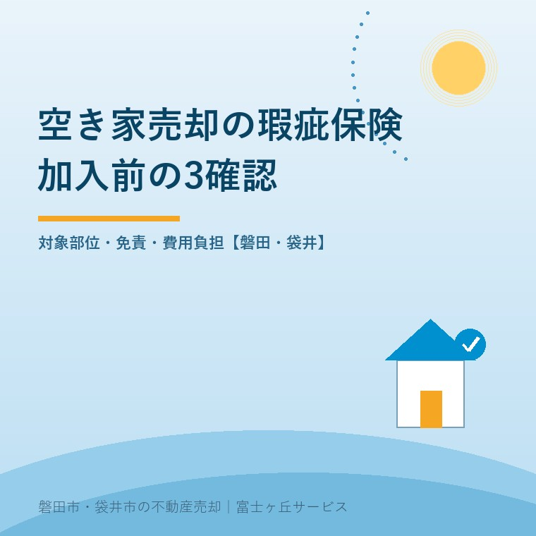
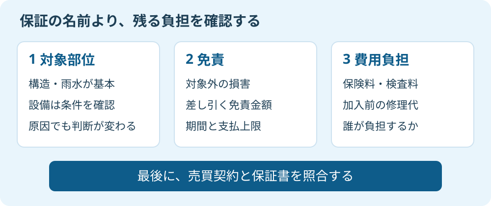

空き家売却の瑕疵保険｜加入前の3確認
2026年9月14日｜カテゴリ：空き家売却・瑕疵保険

この記事の要点
Q. 親の実家を売るとき、瑕疵保険に入れば修理代は心配しなくていいですか。
空き家売却の瑕疵保険は、対象部位・免責・費用負担の3点で選びます。すべての故障を補償する制度ではなく、売買契約上の責任も別に確認します。磐田市・袋井市・森町では、介護施設の運営から不動産事業を始めた富士ヶ丘サービスのような「介護×不動産」専門の会社に相談するという選択肢があります。
親が施設に入り、実家を売る準備を始めた。引渡し後に雨漏りが見つかり、施設費用とは別に修理代を求められたら困る。瑕疵保険を調べるご家族には、その不安があると思います。ただし「売却保証付き」という言葉だけでは、何の負担が減るのか分かりません。
大石浩之（磐田市／不動産業）です。宅地建物取引士として私は、保証の名前より、保証書と見積書を先に見たいと考えます。瑕疵とは、ここでは建物の欠陥のことです。保険の利用可否と、売主が買主に約束する責任を、一枚の話にしないよう整理します。
確認1：対象は家全体ではなく、部位と原因で決まる
既存住宅売買瑕疵保険の基本的な対象は、構造耐力上主要な部分と、雨水の浸入を防止する部分です。住宅瑕疵担保責任保険協会の案内では、家を支える構造や雨を防ぐ部分の欠陥を対象としています。設備まで含むかは、商品や特約を確認します。
JIOの個人間用・検査事業者コースでは、検査して買主に保証する検査事業者が被保険者になります。瑕疵による不具合が起きた際、修補費用等の保険金を受け取るのも原則として事業者です。売主本人が保険に入り、あらゆる請求を肩代わりしてもらう構図とは違います。
私は、検査と保証がつながる点を評価します。家族が建物の専門家でなくても、売却前に状態を確認する機会ができるからです。買主に渡す説明も「古いけれど大丈夫だと思う」から、検査結果と保証範囲を示す話に変えられます。
その上で、仲介会社には対象外も同じ大きさで説明してほしい。例えば給湯器が止まったとき、基本の瑕疵保険で直せると決めつけてはいけません。設備保証の有無、対象機器、故障原因、期間を別に聞きます。家の全部に保証の丸印が付くわけではありません。
国土交通省の2025年8月公表の令和6年度評価書は、PDF32ページの指標（7）に保険実績を載せています。2023年度22,224件に対し、2024年度は21,697件でした。空き家だけの件数でも、修理代が支払われた件数でもありません。
私は、この数字を「入れば安心」の根拠にはしません。利用件数が示されていても、目の前の実家が加入できるかは別だからです。安心Ｒ住宅の表示も、保険そのものと同一視せず、付いている保証を個別に確かめます。

確認2：免責金額と、そもそも対象外の損害を分ける
瑕疵保険の免責を読むときは、支払計算で差し引く免責金額と、保険金を支払わない原因・損害を分けます。住宅瑕疵担保責任保険協会の個人間売買向け案内は、自然災害や部材の劣化など、瑕疵によらない損害は担保されないと説明しています。
例えば雨漏りという同じ症状でも、原因が違えば保険の判断は変わります。「雨が入った」という事実だけでは支払対象か分かりません。事故時の調査や約款に基づく判断が必要で、仲介担当者がその場で保険金の支払いを約束する話ではありません。
| 確認欄 | 家族が聞く言葉 |
|---|---|
| 対象外の原因 | 劣化・自然災害・改修工事による不具合はどう扱いますか。 |
| 免責金額・限度額 | 差し引かれる金額と支払上限はどこに書いてありますか。 |
| 保証の期間 | いつ始まり、いつまでですか。売買契約の期間と違いますか。 |
| 事故時の窓口 | 買主は誰に連絡し、修理前に何を提出しますか。 |
表は私が説明を受ける際の確認項目です。免責金額を売主が必ず払う、と決めているものではありません。保証事業者と買主の保証内容、売主との費用合意を見て、誰に負担が残るのかを確認します。本記事では商品を特定していないため、金額を一律には示しません。
売主の契約不適合責任は、約束した内容に合う物件を渡したかという売買契約の問題です。保険対象外だから売主も無責任、とはなりません。逆に、保険を付けるだけで売主の責任が自動的に増えるとも言い切れません。契約条項の効力や責任範囲は、弁護士などの専門家に確認を。
確認3：保険料だけでなく、加入前の修理代を出す
既存住宅売買瑕疵保険の利用費用は、保険料だけで比較しないことです。住宅瑕疵担保責任保険協会のQ&Aは、検査に指摘があれば修補と再検査への適合が必要と説明しています。保険で備える前に、加入のための支出が発生する可能性があります。
同協会は、保険料や検査料を支払うのは加入事業者で、費用を誰が負担するかは当事者間で決めるとしています。売主負担、買主負担、仲介サービスへの組込みを、名前だけで推測してはいけません。仲介手数料に含まれると言われた場合も、何が含まれるかを明記してもらいます。
「安心」という名前に払うのではなく、家族の持ち出し額で選ぶ。私はこう考えます。施設の月額費用を確保したい家族に、保険料だけを安く見せる説明は足りません。検査で補修が必要になった場合に、誰が見積もりを取り、誰が発注を決めるかまで示して初めて判断できます。
| 依頼前に分ける費用 | 書面に残したい条件 |
|---|---|
| 保険・保証と検査 | 各内訳、消費税、支払時期、最終負担者 |
| 加入前の修補・再検査 | 追加見積もりと発注前の承認者 |
| 加入不可・売買中止 | 既に行った検査の精算、返金の有無 |
私にも迷いはあります。修補すれば保証を付けられる家なら、費用をかける価値はある。しかし、追加工事が出るたびに「ここまで払ったから」と予算を増やすのも違います。私なら工事の前に一度止まり、保証を付けた売却と、状態を説明して条件を組み直す売却を比べます。
磐田・袋井の実家は、検査日と家族の担当を先に決める
磐田市・袋井市で施設入居後の実家を売る準備では、鍵を開ける人と修繕資料を集める人を決めてから検査を相談します。協会の案内では、保険利用には引渡し前の申込みと検査への適合が必要です。契約の引渡日を先に固めると、修補・再検査の日程が収まらないおそれがあります。
私なら、家族が袋井市に住み、実家が磐田市にあるような場合には、移動できる日を先に聞きます。これは説明用の想定で、実際の相談事例ではありません。検査員の立入り、荷物で隠れる箇所、電気や水道の状態も依頼先へ伝え、当日に何が見られるかを確認します。
家族が集めるのは、建築時の資料、雨漏りや修理の記録、分かっている不具合のメモです。分からない履歴は「なし」ではなく「不明」とします。建物状況調査を既に受けていても、その報告書で保険の検査条件を満たすかは依頼先へ照合してください。
今日もらうのは、保証内容と費用内訳の2枚
空き家の瑕疵保険を検討する家族が今日できる確認は、仲介会社へ保証内容の資料と費用内訳を依頼することです。商品名だけでなく、登録事業者名と問い合わせ先が分かるものをもらいます。
- 対象部位と対象外の原因に、自宅の気になる箇所を照らす。
- 免責金額・期間・限度額と、売買契約の責任を分けて読む。
- 修補が出た場合の費用と、発注を止めて考える時点を決める。
富士ヶ丘サービスは、磐田・袋井の地域に根ざし、介護と不動産を一体で相談する立場です。私は、施設生活の支出と売却の手取りを並べ、家族が困らない売却を考えます。保険に入るかを今日決める必要はありません。まず、残る負担を紙に出すよう案内します。
よくある質問
売却の準備で確認したい疑問に答えます。
- 空き家でも既存住宅売買瑕疵保険を利用できますか。
- 空き家だから一律に対象外とは限りませんが、住宅や耐震性の要件、引渡し前の検査への適合が必要です。建築時の書類と修繕履歴を用意し、登録事業者に物件ごとの利用可否を確認します。雨漏りなどの指摘があれば、修補と再検査の費用・日程も確認してください。売出し時点で加入できると断定しないことです。
- 瑕疵保険があれば売主の契約不適合責任はなくなりますか。
- 保険があるという理由だけで、売主の責任がなくなるとは判断できません。契約不適合責任は売買契約の内容などで決まり、保険の支払いは対象部位・原因・期間などの条件で決まります。知っている不具合は告知し、売買契約と保証書を照合してください。免責条項の効力や個別の責任判断は弁護士などの専門家に確認を。
- 保険料と検査料は売主が負担する決まりですか。
- 売主が必ず最終負担するという一律の決まりではありません。住宅瑕疵担保責任保険協会は、加入事業者が支払い、費用を誰が負担するかは当事者間で決めると説明しています。保険料、検査料、修補・再検査費を分けて見積もり、加入できなかった場合や売買中止時の精算も依頼前に書面で確認してください。

この記事を書いた人：大石浩之（不動産業・宅地建物取引士）
磐田市の富士ヶ丘サービス株式会社で、介護と不動産を一体で相談する立場から、磐田・袋井・森町の売主とご家族が困らない売却を支援しています。著者プロフィール
参考にした公式情報
2026年9月14日確認。制度の説明と筆者の判断は分けて記述しています。
本記事は2026年9月14日時点の公開情報と筆者の意見です。制度・数値・手続き・保険商品は変更されることがあります。契約、税務、登記、相続、境界の個別判断は、担当窓口や弁護士・税理士・司法書士・土地家屋調査士などの専門家に確認を。